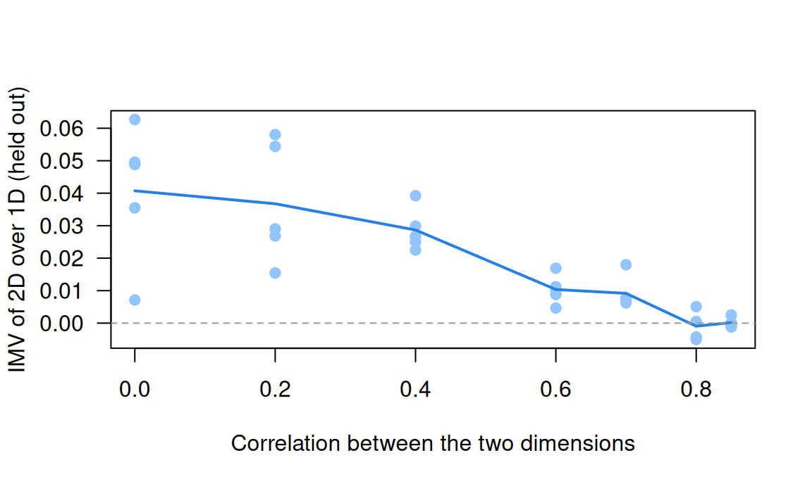
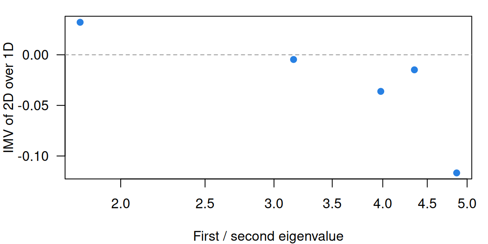

Dimensionality and multidimensional IRT
What this is for
Every item response model so far has given each respondent one number, \(\theta\). Is one enough? Factor analysis II asked the question of grit with two correlated factors, and showed that an ordinal factor model is a graded response model. This lesson fits item response models with more than one ability. The curve becomes a surface, the model acquires a frame the data cannot fix, and a new question becomes answerable: not whether a second dimension fits better (with enough data it nearly always does) but how much it buys. Along the way we meet items that share more than the construct.
Goals
By the end of this lesson you should be able to:
- write down a compensatory two-dimensional item response model, read its response surface, and say how a partially compensatory model differs;
- explain why the axes of a multidimensional model have to be fixed, and why abilities and slopes must be read in the same frame;
- fit exploratory and confirmatory multidimensional graded models with
mirtand read them as item factor analyses; - judge a second dimension by out-of-sample prediction (the IMV) as well as by AIC and BIC;
- recognize local dependence (testlets, shared wording), find it with residual correlations, and say what it does to alpha;
- describe the bifactor model and say why its good fit is weak evidence for a general factor.
Core ideas
More than one ability
Suppose an item draws on two abilities, \(\theta_1\) and \(\theta_2\): a mathematics word problem that needs both reading and arithmetic, say. The simplest model adds them inside the logistic function (Reckase, 2009): \[\Pr(x_{ij} = 1) = \frac{\exp\big(a_{i1}\theta_{j1} + a_{i2}\theta_{j2} - A_i b_i\big)}{1 + \exp\big(a_{i1}\theta_{j1} + a_{i2}\theta_{j2} - A_i b_i\big)}, \qquad A_i = \sqrt{a_{i1}^2 + a_{i2}^2}.\] Each item has a slope on each dimension. Reckase (1985) called \(A_i\) the item’s multidimensional discrimination and \(b_i\) its multidimensional difficulty: the distance from the origin, in the direction the slopes point, to where the probability is one half. With \(a_{i2} = 0\) the formula is the 2PL in \(\theta_1\) (problem 1). mirt writes the exponent as \(a_1\theta_1 + a_2\theta_2 + d\), so \(d = -Ab\).
The model is compensatory: only the weighted sum matters, so a respondent short on one ability can make up for it with more of the other. Nothing requires this. In a partially compensatory model (Whitely, 1980), the probability is a product of one logistic curve per dimension, here \(\text{logistic}(a_{1}(\theta_1 - b)) \times \text{logistic}(a_{2}(\theta_2 - b))\), and success needs enough of both.
Try it: an item response surface
What should you have seen? In the compensatory model the contours are straight parallel lines, so moving along one trades \(\theta_1\) for \(\theta_2\) at a fixed rate, \(a_1/a_2\). Set \(a_2\) to 0 and the lines stand upright: the surface is a 2PL curve pulled out sideways. Switch to the partially compensatory model and the contours bend into corners. A respondent with \(\theta_1 = 1\) and \(\theta_2 = -1\) has a probability of 0.622 under the compensatory model and 0.220 under the other, and no amount of \(\theta_2\) lifts the second above 0.818.
Which form is right is a question about the item. mirt fits both (itemtype = "PC2PL"); the rest of this lesson uses the compensatory form, the one that follows from factor analysis.
The frame is not fixed
The same holds here, for the same reason. The model sees the abilities only through \(a_1\theta_1 + a_2\theta_2\). Rotate the slopes and the abilities by the same angle and every probability is unchanged, much as The Rasch model found for shifts of the origin. So a multidimensional model is identified only once a frame is fixed: each \(\theta\) gets mean 0 and variance 1, and for an exploratory model with two dimensions mirt also fixes one slope at 0 before estimating. Rotation (varimax, oblimin) comes afterwards, as a choice about description.
Try it: rotate the frame
Six items and 300 simulated respondents with two uncorrelated abilities. The arrows are the items’ slope vectors \((a_1, a_2)\).
With the toggle on, the arrows swing and the log likelihood stays at −961.3 whatever the angle. Turn the toggle off and rotate by 45 degrees: the log likelihood falls to −1148.3, because the slopes now describe one frame and the abilities another. The mismatch is easy to make: for an exploratory model, mirt’s coef() reports unrotated slopes while fscores() rotates the abilities by default, so the real-data code asks for fscores(..., rotate = "none").
Exploratory and confirmatory models
So a multidimensional graded model is an item factor analysis, fitted to whole response patterns rather than to polychoric correlations (Bock, Gibbons & Muraki, 1988, who called it full-information item factor analysis). Both kinds of factor analysis carry over. In an exploratory model every item has a slope on every dimension, and the solution is rotated for reading: mirt(resp, 2). In a confirmatory model some slopes are fixed at zero where a dimension isn’t measured, and the zeros fix the frame:
spec <- mirt.model("GRIT = 1-12
MIND = 13-20
COV = GRIT*MIND") # the two dimensions may correlate
fit <- mirt(resp, spec, itemtype = "graded")mirt (Chalmers, 2012) reports slopes; summary() converts them to standardized loadings, which the real-data code checks by hand.
How much better is a second dimension?
AIC and BIC charge a second dimension for its extra parameters and say whether the gain is worth them, not how much better it is on a scale that means the same thing from test to test.
If you’ve done Model fit and out-of-sample prediction, you’ve met the answer used here. Hold out a random fifth of the responses (not respondents), fit both models to the rest, and predict the held-out ones (Stenhaug & Domingue, 2022). The InterModel Vigorish (Domingue et al., 2025; for item response models, Domingue et al., 2024) turns each model’s predictive accuracy into the weight of an equivalent coin, \(w_0\) and \(w_1\), and reports \((w_1 - w_0)/w_0\), the expected return on a fair bet placed with the better predictions. For scale: in their simulations the 2PL gained about 0.01 over the Rasch model when slopes varied substantially.
Local dependence
A second dimension is one way to see local dependence. Items built around a shared stimulus (a passage, a graph, a scenario) form a testlet (Wainer & Kiely, 1987), and items worded the same way can behave like one. Each group shares something beyond \(\theta\), so their residuals correlate once \(\theta\) is accounted for. Yen (1984) proposed that residual correlation, \(Q_3\), as a check, and Chen and Thissen (1997) gave χ² indexes for pairs of items. A model can give each testlet a dimension of its own (Bradlow, Wainer & Wang, 1999), a case of the bifactor model below.
Local dependence is a correlation between errors, if “error” means everything but \(\theta\).
Try it: testlets and alpha
Twelve items in four testlets of three. Each item loads on \(\theta\) and on its testlet’s own factor.
With no testlet factor all three coefficients are 0.871. At the starting values (loadings of 0.6 and 0.4) alpha is 0.884: below omega total (0.909) but above omega hierarchical (0.818), and items in the same testlet have a residual correlation of 0.25. If the testlet variance counts as signal, alpha is still a lower bound. If the score is meant to measure \(\theta\), as it usually is, alpha overstates its reliability, and the gap grows with the testlet loading. (See Sireci, Thissen & Wainer, 1991, on testlets, and Zimmerman, Zumbo & Lalonde, 1993, on correlated errors.)
The bifactor model
The testlet widget used a bifactor model (Holzinger & Swineford, 1937; for item responses, Gibbons & Hedeker, 1992): every item loads on a general factor and on one specific factor for its group, and all the factors are uncorrelated. The general factor is the construct; each specific factor is what a group of items shares beyond it (a facet, a testlet, a wording). That structure matches one construct with facets, and it is how Factor analysis II asked whether the DASS-21 yields one score or three (omega hierarchical 0.879). The second-order model, in which one higher factor explains the correlations among first-order factors, is a bifactor model with proportionality constraints on the loadings (Yung, Thissen & McLeod, 1999).
The bifactor model’s flexibility has a cost. Bonifay and Cai (2017) fitted item response models to 1,000 data sets sampled at random from all possible response patterns, and found that the bifactor and exploratory factor models tended to fit almost any of them, while a unidimensional 3PL with one more parameter did not. Counting parameters, they argued, understates a model’s complexity; its fitting propensity also depends on its functional form. For factor models fitted to continuous data, Bader and Moshagen (2025) found the differences in fitting propensity among single-factor, correlated-factors, higher-order and bifactor models mostly driven by the number of free parameters, and Bonifay, Cai, Falk and Preacher (2025) reassess the question with analytic examples. Either way, a good bifactor fit is weak evidence, on its own, that a general factor exists. In miniature: data from two factors correlated 0.3, with no general factor at all.
Code
library(lavaan)
set.seed(43)
np <- 1000; rho <- 0.3; lam <- 0.7
f <- matrix(rnorm(np * 2), np) %*% chol(matrix(c(1, rho, rho, 1), 2))
X <- as.data.frame(sapply(1:12, function(i) lam * f[, (i > 6) + 1] + sqrt(1 - lam^2) * rnorm(np)))
names(X) <- paste0("x", 1:12)
models <- c(
correlated = "A =~ x1 + x2 + x3 + x4 + x5 + x6
B =~ x7 + x8 + x9 + x10 + x11 + x12",
one_factor = "G =~ x1 + x2 + x3 + x4 + x5 + x6 + x7 + x8 + x9 + x10 + x11 + x12",
bifactor = "G =~ x1 + x2 + x3 + x4 + x5 + x6 + x7 + x8 + x9 + x10 + x11 + x12
S =~ x7 + x8 + x9 + x10 + x11 + x12")
fits <- lapply(models, cfa, data = X, std.lv = TRUE, orthogonal = TRUE)
fits$correlated <- cfa(models[["correlated"]], data = X, std.lv = TRUE) # A and B may correlate
round(t(sapply(fits, fitMeasures, c("chisq", "df", "cfi", "rmsea", "aic"))), 3) chisq df cfi rmsea aic
correlated 64.082 53 0.998 0.014 29596.32
one_factor 1896.724 54 0.598 0.185 31426.96
bifactor 55.092 48 0.998 0.012 29597.33Code
# The bifactor model's "general factor", in data generated without one:
L <- inspect(fits$bifactor, "std")$lambda
round(range(L[, "G"]), 2)[1] 0.20 0.73Code
gen <- sum(L[, "G"])^2; spec <- sum(L[, "S"])^2; uniq <- sum(1 - rowSums(L^2))
round(c(omega_h = gen / (gen + spec + uniq)), 2)omega_h
0.59 The bifactor model fits as well as the true model (CFI 0.998 for both; AIC 29,597 against 29,596), and reports a general factor with loadings from 0.20 to 0.73 and an omega hierarchical of 0.59. A bifactor fit says the data can be described with a general factor, not that one is there.
Simulate
The code simulates 500 respondents answering 10 items (items 1–5 on one dimension, 6–10 on another, correlated rho), holds out a fifth of the responses, fits one- and two-dimensional 2PL models to the rest, and prints the IMV of the second dimension on the held-out responses. The first run takes 20–30 seconds while mirt loads.
With the seed as written, the correlation is estimated at 0.46 (true 0.5), AIC prefers two dimensions by 75 points, and the IMV is 0.027. Set rho <- 0 and the IMV rises to 0.059; set rho <- 0.8 and it is 0.006, although AIC still prefers two dimensions.
Download this code. The sweep below repeats it five times at each of seven correlations; at about two minutes that is too slow for the browser, so it was run when this page was built (its code).
Code
library(mirt)
one_run <- function(rho, np = 500, a = 1.5) {
d <- rep(seq(-1.5, 1.5, length.out = 5), 2); dim <- rep(1:2, each = 5)
theta <- matrix(rnorm(np * 2), np) %*% chol(matrix(c(1, rho, rho, 1), 2))
resp <- (matrix(runif(np * 10), np) < plogis(a * theta[, dim] + rep(d, each = np))) * 1
colnames(resp) <- paste0("x", 1:10)
cells <- which(!is.na(resp), arr.ind = TRUE)
test <- cells[sample(nrow(cells), nrow(cells) / 5), ]
train <- as.data.frame(resp); train[test] <- NA
m1 <- mirt(train, 1, itemtype = "2PL", verbose = FALSE)
m2 <- mirt(train, mirt.model("F1 = 1-5
F2 = 6-10
COV = F1*F2"), itemtype = "2PL", quadpts = 15, verbose = FALSE)
pr <- function(m) {
th <- fscores(m); cf <- coef(m, simplify = TRUE)$items
A <- cf[, grep("^a", colnames(cf)), drop = FALSE]
plogis(rowSums(A[test[, 2], , drop = FALSE] * th[test[, 1], , drop = FALSE]) + cf[test[, 2], "d"])
}
coin <- function(ll) uniroot(function(w) w * log(w) + (1 - w) * log(1 - w) - ll, c(0.5, 1 - 1e-12))$root
mll <- function(p) mean(resp[test] * log(p) + (1 - resp[test]) * log(1 - p))
w1 <- coin(mll(pr(m1))); w2 <- coin(mll(pr(m2)))
c(imv = (w2 - w1) / w1, dAIC = extract.mirt(m1, "AIC") - extract.mirt(m2, "AIC"))
}
set.seed(4343)
rhos <- c(0, 0.2, 0.4, 0.6, 0.7, 0.8, 0.85)
# Near a correlation of 1 the two-dimensional fit can fail (the estimated covariance
# matrix becomes singular); a failed run is recorded as NA and counted below.
safe_run <- function(r) tryCatch(suppressWarnings(one_run(r)), error = function(e) c(imv = NA, dAIC = NA))
runs <- do.call(rbind, lapply(rhos, function(r) data.frame(rho = r, t(replicate(5, safe_run(r))))))
c(failed_runs = sum(is.na(runs$imv)))failed_runs
1 Code
sweep <- aggregate(cbind(imv, dAIC) ~ rho, runs, mean)
sweep$aic_prefers_2d <- aggregate(dAIC ~ rho, runs, function(x) sum(x > 0))$dAIC
print(transform(sweep, imv = round(imv, 4), dAIC = round(dAIC, 1)), row.names = FALSE) rho imv dAIC aic_prefers_2d
0.00 0.0407 151.6 5
0.20 0.0367 128.1 5
0.40 0.0287 86.2 5
0.60 0.0104 43.4 5
0.70 0.0092 25.4 5
0.80 -0.0009 7.8 2
0.85 0.0002 0.4 1Code
plot(runs$rho, runs$imv, pch = 19, col = "#93c5fd", las = 1,
xlab = "Correlation between the two dimensions", ylab = "IMV of 2D over 1D (held out)")
lines(sweep$rho, sweep$imv, lwd = 2, col = "#2780e3")
abline(h = 0, lty = 2, col = "#999")
The IMV falls as the dimensions converge: 0.041 when they are unrelated, about 0.01 at correlations of 0.6 and 0.7, and nothing to speak of from 0.8 on. AIC goes on preferring two dimensions for longer, in two of five runs at 0.8 (one run, at the highest correlation, failed and is left out). With 500 respondents and five items per dimension, a second dimension has to be fairly distinct before it predicts better.
With real data
Our two tables come from the same young people. florida_twins_grit holds the 12-item Grit-O (Duckworth, Peterson, Matthews & Kelly, 2007), and florida_twins_dweck eight items on implicit theories of intelligence, whether intelligence is fixed or can grow (“mindset” for short; Dweck, Chiu & Hong, 1995). Both were answered by twins aged 9 to 18 in the Florida Twin Project on Reading, Behavior, and Environment (Hart, Schatschneider & Taylor, 2021). Their job together: two constructs, measured side by side, to test against one dimension. Download the code behind every number below.
Code
library(mirt)
# Each IRW table has a landing page (itemresponsewarehouse.org/tables/<name>/) with
# a CSV download. These links are pinned to one version of the data.
base <- "https://redivis.com/api/v1/tables/datapages.item_response_warehouse:v60_0."
gr <- read.csv(paste0(base, "florida_twins_grit/rows?format=csv"))
dw <- read.csv(paste0(base, "florida_twins_dweck/rows?format=csv"))
table(grit = gr$wave) # grit was asked in wave 2 onlygrit
2
9257 Code
table(mindset = dw$wave) # mindset in waves 2 and 3; we keep wave 2mindset
2 3
6169 4828 Code
dw <- dw[dw$wave == 2, ]
to_wide <- function(df) {
w <- tapply(df$resp, list(df$id, df$item), function(x) x[1])
w[, order(as.numeric(gsub("\\D", "", colnames(w))))]
}
G <- to_wide(gr); M <- to_wide(dw)
both <- intersect(rownames(G), rownames(M)) # respondents who answered both scales
X <- data.frame(G[both, ], M[both, ])
c(respondents = nrow(X), complete = sum(complete.cases(X)), missing_responses = sum(is.na(X))) respondents complete missing_responses
777 668 171 Code
# Twins: the processing script stacks the two twins of each family (twin 0 and twin 1),
# so an id is the family number times 100 plus 0 or 1. There is no separate family column.
fam <- as.numeric(rownames(X)) %/% 100
table(twins_in_sample = table(fam))twins_in_sample
1 2
5 386 Grit was asked only in the second wave, so we keep wave 2 of the mindset items too: 777 respondents answered both. They come from 386 families with both twins in the sample, plus 5 with one. Nothing below rests on a standard error, but one would need to account for the families.
On keying: both tables arrive as answered, with 1 meaning “Very much like me” (grit) or “Strongly agree” (mindset), per the option text in the IRW. We reverse the six grit items worded toward grit and the four mindset items worded toward an incremental view, so that higher means more grit and more of a “growth” view of intelligence.
Code
# Both tables arrive as answered. Grit: 1 = "Very much like me" ... 5 = "Not like me
# at all". The six perseverance items (1, 4, 6, 9, 10, 12) are worded toward grit, so we
# reverse them; the six consistency items are worded against it and stay as they are.
# Mindset: 1 = "Strongly agree" ... 6 = "Strongly disagree". Items 1, 2, 4 and 6 state
# an entity theory (intelligence is fixed) and stay; items 3, 5, 7 and 8 state an
# incremental theory (it can change) and are reversed. Now higher = more grit, and
# higher = more of an incremental ("growth") view of intelligence.
per <- paste0("qgrit", c(1, 4, 6, 9, 10, 12))
inc <- paste0("qdweckt", c(3, 5, 7, 8))
X[per] <- 6 - X[per]
X[inc] <- 7 - X[inc]
grit <- names(X)[1:12]; mind <- names(X)[13:20]
R <- cor(X, use = "pairwise.complete.obs")
low <- function(r) round(range(r[lower.tri(r)]), 2)
rbind(grit = low(R[grit, grit]), mindset = low(R[mind, mind])) [,1] [,2]
grit -0.33 0.52
mindset 0.27 0.75Code
round(R["qgrit11", grit[grit != "qgrit11"]], 2) # the one grit item that runs the other way qgrit1 qgrit2 qgrit3 qgrit4 qgrit5 qgrit6 qgrit7 qgrit8 qgrit9 qgrit10
-0.23 0.09 0.26 -0.11 0.16 -0.19 0.21 0.03 -0.21 -0.33
qgrit12
-0.23 Every pair of mindset items now correlates positively (0.27 to 0.75). The grit items don’t: one item runs against most of the others, and we come back to it.
Code
# Sum scores (respondents with every item of a scale) and their correlation.
s_grit <- rowSums(X[grit]); s_mind <- rowSums(X[mind])
round(cor(s_grit, s_mind, use = "complete.obs"), 2)[1] 0.17Code
# Item-rest correlations for grit: each item against the sum of the other eleven.
round(sapply(grit, function(i) cor(X[[i]], rowSums(X[setdiff(grit, i)]), use = "complete.obs")), 2) qgrit1 qgrit2 qgrit3 qgrit4 qgrit5 qgrit6 qgrit7 qgrit8 qgrit9 qgrit10
0.26 0.41 0.16 0.27 0.39 0.45 0.45 0.54 0.50 0.33
qgrit11 qgrit12
-0.10 0.37 Code
# Graded response models (mirt handles the missing responses). One dimension for all
# 20 items, then two correlated dimensions with each item on its own scale's dimension.
set.seed(43)
m1 <- mirt(X, 1, itemtype = "graded", verbose = FALSE)
spec <- mirt.model("GRIT = 1-12
MIND = 13-20
COV = GRIT*MIND")
m2 <- mirt(X, spec, itemtype = "graded", verbose = FALSE)
anova(m1, m2)| AIC | SABIC | HQ | BIC | logLik | X2 | df | p | |
|---|---|---|---|---|---|---|---|---|
| m1 | 43858.69 | 44018.53 | 44052.10 | 44361.48 | -21821.35 | NA | NA | NA |
| m2 | 42728.45 | 42889.77 | 42923.66 | 43235.89 | -21255.23 | 1132.24 | 1 | 0 |
Code
round(coef(m2, simplify = TRUE)$cov, 2) # latent correlation between grit and mindset GRIT MIND
GRIT 1.00 0.26
MIND 0.26 1.00The sum scores correlate 0.17 and the latent dimensions 0.26. Two dimensions beat one by a wide margin (AIC 43,859 against 42,728; BIC 44,361 against 43,236).
Code
# A graded model is an ordinal factor model: summary() reports standardized loadings,
# lambda = (a / 1.702) / sqrt(1 + sum of (a_k / 1.702)^2) on the normal-ogive scale.
a <- coef(m2, simplify = TRUE)$items[, c("a1", "a2")]
lam <- (a / 1.702) / sqrt(1 + rowSums((a / 1.702)^2))
round(cbind(from_slopes = rowSums(lam), summary = rowSums(summary(m2, verbose = FALSE)$rotF)), 2)[c(1:3, 11, 13:14), ] from_slopes summary
qgrit1 0.51 0.51
qgrit2 0.38 0.38
qgrit3 0.00 0.00
qgrit11 -0.31 -0.31
qdweckt1 0.77 0.77
qdweckt2 0.79 0.79The loadings computed by hand from the slopes match summary(): the graded model is the factor model. Two grit items stand out: qgrit3 loads 0.00 and qgrit11 −0.31.
Does the split survive when every item is free to load on both dimensions?
Code
# Every item may load on both dimensions. mirt estimates the unrotated solution, then
# rotates it for display (oblimin, which lets the factors correlate).
m2e <- mirt(X, 2, itemtype = "graded", verbose = FALSE)
anova(m2, m2e)| AIC | SABIC | HQ | BIC | logLik | X2 | df | p | |
|---|---|---|---|---|---|---|---|---|
| m2 | 42728.45 | 42889.77 | 42923.66 | 43235.89 | -21255.23 | NA | NA | NA |
| m2e | 42639.04 | 42827.00 | 42866.49 | 43230.29 | -21192.52 | 125.4059 | 18 | 0 |
Code
ex <- summary(m2e, rotate = "oblimin", verbose = FALSE)
round(ex$rotF, 2)
Loadings:
F1 F2
qgrit1 0.10 0.52
qgrit2 0.32
qgrit3
qgrit4 0.49
qgrit5 0.29
qgrit6 0.79
qgrit7 0.14 0.27
qgrit8 0.49
qgrit9 0.82
qgrit10 0.61
qgrit11 -0.37
qgrit12 0.64
qdweckt1 0.83 -0.10
qdweckt2 0.87 -0.16
qdweckt3 0.73 0.17
qdweckt4 0.83
qdweckt5 0.72 0.14
qdweckt6 0.79
qdweckt7 0.65 0.18
qdweckt8 0.70 0.20
F1 F2
SS loadings 4.723 3.333Code
round(ex$fcor[1, 2], 2)[1] 0.19Code
# Rotation changes the loadings, not the fit: the same model under varimax.
vx <- summary(m2e, rotate = "varimax", verbose = FALSE)
round(vx$rotF[c("qgrit9", "qdweckt2"), ], 2) F1 F2
qgrit9 0.01 0.81
qdweckt2 0.85 -0.09Code
c(logLik = extract.mirt(m2e, "logLik")) # one fitted model, whatever the rotation logLik
-21192.52 Code
# To pin the frame for estimation, mirt fixes one slope at 0 (here the last item's
# second slope); the rotations above are applied afterwards.
v <- mod2values(m2e)
v[v$name %in% c("a1", "a2") & !v$est, c("item", "name", "value")]| item | name | value | |
|---|---|---|---|
| 123 | qdweckt8 | a2 | 0 |
Code
# fscores() rotates an exploratory model's abilities too (oblimin by default), while
# coef() reports unrotated slopes. The two sets of abilities are different frames:
th_rot <- fscores(m2e); th_raw <- fscores(m2e, rotate = "none")
round(cor(th_rot, th_raw, use = "complete.obs"), 2) F1 F2
F1 0.98 0.23
F2 0.48 -0.86It does. After an oblimin rotation every mindset item loads 0.65 to 0.87 on one factor, and the grit items load on the other, which correlates 0.19 with it. Varimax gives other numbers with the same log likelihood; the last two outputs show the slope mirt fixed and the rotated abilities from fscores().
qgrit11 loads −0.37 here, and its item-rest correlation is −0.10. It reads “I become very interested in new pursuits every few months” (the IRW’s item text for the Grit-O; Duckworth et al., 2007). The scale treats agreement as low consistency of interest, but here it correlates negatively with every keyed perseverance item. Becoming very interested in new things may simply read as a good trait at 13. It is an item worth reading closely (problem 2).
Now the question the fit statistics can’t answer: how much does the second dimension buy? We dichotomize as in EDUC 252 (grit: at least “Somewhat like me” in the gritty direction; mindset: the incremental side of the scale) and run five-fold cross-validation.
Code
# The IMV (Domingue et al., 2024, 2025), as in the lesson on model fit and prediction.
coin <- function(ll) {
if (ll <= log(0.5)) return(0.5)
uniroot(function(w) w * log(w) + (1 - w) * log(1 - w) - ll, c(0.5, 1 - 1e-12), tol = 1e-12)$root
}
mean_ll <- function(y, p) mean(y * log(p) + (1 - y) * log(1 - p))
imv <- function(y, p0, p1) {
w0 <- coin(mean_ll(y, p0)); w1 <- coin(mean_ll(y, p1))
(w1 - w0) / w0
}
# Predictions for held-out cells from a (multidimensional) 2PL. Abilities must be in the
# same frame as the slopes: coef() gives unrotated slopes, so ask fscores() for
# unrotated abilities (for an exploratory model it rotates them by default).
predict_cells <- function(m, cells) {
th <- fscores(m, rotate = "none")
th[is.na(th)] <- 0 # a respondent with every response held out: the prior mean
cf <- coef(m, simplify = TRUE)$items
A <- cf[, grep("^a", colnames(cf)), drop = FALSE]
i <- cells[, 2]
plogis(rowSums(A[i, , drop = FALSE] * th[cells[, 1], , drop = FALSE]) + cf[i, "d"])
}
# Five-fold cross-validation over responses (cells), as in fit-prediction.
cv_imv <- function(resp, base, better, k = 5, seed = 1) {
set.seed(seed)
Xm <- as.matrix(resp)
cells <- which(!is.na(Xm), arr.ind = TRUE)
fold <- sample(rep(1:k, length.out = nrow(cells)))
sapply(1:k, function(f) {
test <- cells[fold == f, , drop = FALSE]
train <- as.data.frame(Xm); train[test] <- NA
p0 <- predict_cells(mirt(train, base, itemtype = "2PL", verbose = FALSE), test)
p1 <- predict_cells(mirt(train, better, itemtype = "2PL", verbose = FALSE), test)
imv(Xm[test], p0, p1)
})
}Code
# Dichotomize as in PS6#1: grit 1 = at least "Somewhat like me" in the gritty direction
# (keyed 3-5); mindset 1 = on the incremental side of the scale (keyed 4-6).
B <- X
B[grit] <- 1 * (X[grit] >= 3)
B[mind] <- 1 * (X[mind] >= 4)
round(range(colMeans(B, na.rm = TRUE)), 2) # proportion coded 1, lowest and highest item[1] 0.57 0.95Code
imv_conf <- cv_imv(B, 1, spec) # confirmatory 2D over 1D
imv_expl <- cv_imv(B, 1, 2) # exploratory 2D over 1D
round(rbind(confirmatory = imv_conf, exploratory = imv_expl), 4) [,1] [,2] [,3] [,4] [,5]
confirmatory 0.0124 0.0099 0.0134 0.0141 0.0079
exploratory 0.0093 0.0046 0.0101 0.0059 0.0074Code
round(c(confirmatory = mean(imv_conf), exploratory = mean(imv_expl)), 4)confirmatory exploratory
0.0116 0.0075 The confirmatory two-dimensional model’s IMV over one dimension is 0.0116, positive in every fold, about the size of the 2PL’s gain over the Rasch model in a test whose slopes vary substantially. The exploratory model gains less, 0.0075: its eighteen extra parameters cost more in noise than they return.
Local dependence in the mindset items
Which pairs of items share the most once grit and mindset are accounted for?
Code
# Local dependence: Yen's Q3, the correlation between two items' residuals after the
# two-dimensional model has accounted for grit and mindset. The eight largest in size:
q3 <- residuals(m2, type = "Q3", verbose = FALSE)
q3[upper.tri(q3, diag = TRUE)] <- NA
top <- order(abs(q3), decreasing = TRUE)[1:8]
data.frame(item1 = rownames(q3)[row(q3)[top]], item2 = colnames(q3)[col(q3)[top]],
Q3 = round(q3[top], 2))| item1 | item2 | Q3 |
|---|---|---|
| qdweckt2 | qdweckt1 | 0.43 |
| qdweckt8 | qdweckt2 | -0.40 |
| qdweckt5 | qdweckt1 | -0.38 |
| qdweckt8 | qdweckt1 | -0.37 |
| qgrit11 | qgrit7 | 0.34 |
| qgrit8 | qgrit7 | 0.34 |
| qgrit7 | qgrit5 | 0.33 |
| qdweckt7 | qdweckt6 | -0.32 |
Five of the eight largest residual correlations are among mindset items, and they follow the wording. Two entity-worded items (1 and 2) share 0.43; entity-worded and incremental-worded items run the other way (down to −0.40).
Four mindset items say intelligence is fixed and four say it can change. Is that one dimension or two?
Code
# Wording direction in the mindset scale. Two correlated dimensions, one per wording:
Mi <- X[mind]
g1 <- mirt(Mi, 1, itemtype = "graded", verbose = FALSE)
g2 <- mirt(Mi, mirt.model("ENTITY = 1, 2, 4, 6
INCREMENTAL = 3, 5, 7, 8
COV = ENTITY*INCREMENTAL"), itemtype = "graded", verbose = FALSE)
anova(g1, g2)| AIC | SABIC | HQ | BIC | logLik | X2 | df | p | |
|---|---|---|---|---|---|---|---|---|
| g1 | 17460.26 | 17531.30 | 17546.22 | 17683.72 | -8682.130 | NA | NA | NA |
| g2 | 16960.37 | 17032.89 | 17048.13 | 17188.49 | -8431.187 | 501.8859 | 1 | 0 |
Code
round(coef(g2, simplify = TRUE)$cov[1, 2], 2)[1] 0.68Code
# A method factor: one general mindset dimension for all eight items, plus a factor for
# the four incremental-worded items only, uncorrelated with it (a bifactor model).
bf <- bfactor(Mi, c(NA, NA, 1, NA, 1, NA, 1, 1), itemtype = "graded", verbose = FALSE)
anova(g2, bf) # the method-factor model against the two correlated wording dimensions| AIC | SABIC | HQ | BIC | logLik | X2 | df | p | |
|---|---|---|---|---|---|---|---|---|
| g2 | 16960.37 | 17032.89 | 17048.13 | 17188.49 | -8431.187 | NA | NA | NA |
| bf | 16943.28 | 17020.24 | 17036.40 | 17185.36 | -8419.639 | 23.09726 | 3 | 3.85e-05 |
Code
L <- summary(bf, verbose = FALSE)$rotF
round(L, 2) G S1
qdweckt1 0.88 0.00
qdweckt2 0.91 0.00
qdweckt3 0.62 0.51
qdweckt4 0.81 0.00
qdweckt5 0.60 0.58
qdweckt6 0.77 0.00
qdweckt7 0.51 0.68
qdweckt8 0.57 0.67Code
# Omega from the standardized loadings (normal-ogive scale).
gen <- sum(L[, 1])^2; meth <- sum(L[, 2])^2; uniq <- sum(1 - rowSums(L^2))
round(c(omega_total = (gen + meth) / (gen + meth + uniq),
omega_h = gen / (gen + meth + uniq),
alpha = psych::alpha(Mi, warnings = FALSE)$total$raw_alpha), 2)omega_total omega_h alpha
0.94 0.80 0.87 Two correlated dimensions, one per wording, fit far better than one (AIC 17,460 against 16,960), and correlate 0.68. A model with a method factor for the incremental-worded items, uncorrelated with a general mindset dimension, says the same thing another way: those four items load 0.51 to 0.68 on the method factor, and it fits a little better than the two correlated dimensions (AIC 16,943 against 16,960), which is the bifactor model’s flexibility at work as much as evidence for either story. Omega hierarchical is 0.80, the share of the mindset score’s variance that the general dimension accounts for, against an omega total of 0.94. Alpha, 0.87, sits between them, as it did in the testlet widget. (A rough comparison: alpha is on the item scores, omega on the latent response scale.)
So, one score or two? Two assumptions sit under the answer. One grit-and-mindset score assumes a single construct; the two correlate 0.26, and a second dimension predicts held-out responses about as much better as a 2PL does over the Rasch model. Two mindset scores assume the entity and incremental items tap different beliefs, rather than one belief seen through two wordings; they correlate 0.68, and the general factor carries most of the score. The held-out comparison speaks to the first split: separating grit from mindset gains 0.0116, positive in every fold. For the wording split this lesson has only AIC, and the bifactor model’s flexibility makes that weak evidence on its own; the held-out comparison for it is problem 3. Every extra dimension fits; the question is which predict well enough to earn a score.
Problems
- Reductions. Show that a compensatory two-dimensional item with \(a_2 = 0\) is a 2PL in \(\theta_1\) with difficulty \(b\). Then show that rotating the slopes and the abilities by the same orthogonal matrix leaves every response probability unchanged, and that with uncorrelated standard normal abilities it leaves the marginal likelihood unchanged too. Where does the argument need the abilities to be uncorrelated?
- qgrit11. Refit the confirmatory model with qgrit11 reversed, then dropped. What changes? Argue for a keying, or for dropping it, for respondents of this age. Would your answer be the same for the adults in Factor analysis II? (PS6#1.)
- One mindset score or two? AIC prefers two correlated wording dimensions for the mindset items. Compute the IMV of that model over one dimension by five-fold cross-validation on the dichotomized items, and look at the fold-to-fold spread and at the slopes. Would you report one mindset score or two? What would change your mind?
- Design. Items sharing a reading passage may be locally dependent. Design a check (statistic, comparison, threshold) and a remedy. How would you tell a passage effect from a second ability, such as vocabulary?
- When does a second dimension pay? Using the simulation, find the correlation at which the IMV of the second dimension falls below 0.005 with 500 respondents, then with 2,000, and then with 10 items per dimension. Is there a correlation above which a second score is never worth reporting?
- Challenge (open). In the compensatory model, suppose some items have \(a_1 = 0\) and the others \(a_2 = 0\), so that each dimension has its own set of items, as grit and mindset do here. What changes, compared with items that draw on both abilities, in identification and in whether separate scores are justified? The EDUC 252 slides flag this as a big question, and I don’t know of a general answer.
Across the IRW
How often does one dimension hold? The IRW’s dimensionality vignette answers with parallel analysis, and Factor analysis I quoted it: one factor in only 3% of 810 tables. That criterion, like AIC, says whether. compute.R asks how much, with this lesson’s tool. For IRW tables with 6 to 40 items and at least 500 respondents (at most 1,000 sampled per table), it splits each item near its median, fits one- and two-dimensional (exploratory) 2PL models in five-fold cross-validation, and records the IMV of the second dimension, with the ratio of the first two eigenvalues of the item correlations as the vignette’s index for comparison.
Code
dd_path <- file.path("..", "deepdives", "dimensionality", "results.rds")
dd <- if (file.exists(dd_path)) readRDS(dd_path) else NULL
if (!is.null(dd)) {
s <- dd$summary[order(dd$summary$imv_2d), ]
print(data.frame(table = s$table, items = s$n_items, respondents = s$n_resp,
eigen_ratio = round(s$eig_ratio, 2), IMV_2D = round(s$imv_2d, 4),
fold_sd = round(s$imv_2d_sd, 4)), row.names = FALSE)
op <- par(mar = c(4, 4, 1, 1))
plot(s$eig_ratio, s$imv_2d, pch = 19, col = "#2780e3", las = 1, log = "x",
xlab = "First / second eigenvalue", ylab = "IMV of 2D over 1D")
abline(h = 0, lty = 2, col = "#999")
par(op)
} table items respondents eigen_ratio IMV_2D fold_sd
cinar_tanriverdi_2023_gad7 7 544 4.86 -0.1167 0.1019
spain_2014_debate_rubalcaba 8 1000 3.98 -0.0362 0.0296
campos_2023_pidaq 24 1000 4.35 -0.0149 0.0035
gilbert_meta_2 20 1000 3.16 -0.0047 0.0035
psychtools_bfi 25 1000 1.80 0.0321 0.0050
Run on 25 September 2026: 5 tables fitted, 0 failed. The IMV of a second dimension has median -0.0149 (range -0.1167 to 0.0321).
The pilot checks the pipeline. psychtools_bfi, built for five traits, gains 0.032 from a second dimension, and the reading test loses a little, as it should when there is nothing for a second dimension to find. The three random tables lose more, down to −0.117 for a seven-item anxiety scale with 544 respondents, where an unconstrained second dimension adds seven slopes to estimate from little data. A negative IMV here is a fact about fitting an exploratory model to a small table, not about the scale. The full run will say how often a second dimension pays across the warehouse, and whether the eigenvalue ratio predicts when.
Going further
- Reckase, M. D. (2009). Multidimensional item response theory. Springer. https://doi.org/10.1007/978-0-387-89976-3. The book on the models, their surfaces and their identification.
- Reckase, M. D. (1985). The difficulty of test items that measure more than one ability. Applied Psychological Measurement, 9(4), 401–412. https://doi.org/10.1177/014662168500900409. Multidimensional discrimination and difficulty.
- Bock, R. D., Gibbons, R., & Muraki, E. (1988). Full-information item factor analysis. Applied Psychological Measurement, 12(3), 261–280. https://doi.org/10.1177/014662168801200305. Multidimensional IRT as factor analysis of whole response patterns.
- Whitely, S. E. (1980). Multicomponent latent trait models for ability tests. Psychometrika, 45(4), 479–494. https://doi.org/10.1007/BF02293610. A partially compensatory model, built from the components of a task.
- Reckase, M. D. (2016). Logistic multidimensional models. In W. J. van der Linden (Ed.), Handbook of item response theory: Vol. 1. Models (pp. 189–209). Chapman and Hall/CRC. https://doi.org/10.1201/9781315374512. A handbook chapter on multidimensional logistic item response models.
- Gibbons, R. D., & Cai, L. (2017). Dimensionality analysis. In W. J. van der Linden (Ed.), Handbook of item response theory: Vol. 3. Applications (pp. 47–66). Chapman and Hall/CRC. https://doi.org/10.1201/9781315117430. A handbook chapter on assessing the dimensionality of item response data.
- Cai, L. (2016). Two-tier item factor analysis modeling. In W. J. van der Linden (Ed.), Handbook of item response theory: Vol. 1. Models (pp. 421–435). Chapman and Hall/CRC. https://doi.org/10.1201/9781315374512. A handbook chapter on two-tier item factor models, which include the bifactor model.
- Gibbons, R. D., & Hedeker, D. R. (1992). Full-information item bi-factor analysis. Psychometrika, 57(3), 423–436. https://doi.org/10.1007/BF02295430. The bifactor model for item responses.
- Yung, Y.-F., Thissen, D., & McLeod, L. D. (1999). On the relationship between the higher-order factor model and the hierarchical factor model. Psychometrika, 64(2), 113–128. https://doi.org/10.1007/BF02294531. The second-order model as a constrained bifactor model.
- Bonifay, W., & Cai, L. (2017). On the complexity of item response theory models. Multivariate Behavioral Research, 52(4), 465–484. https://doi.org/10.1080/00273171.2017.1309262. Fitting propensity: the bifactor model fits almost any data.
- Bader, M., & Moshagen, M. (2025). Assessing the fitting propensity of factor models. Psychological Methods, 30(2), 254–270. https://doi.org/10.1037/met0000529. Fitting propensity of single-factor, correlated-factors, higher-order and bifactor models, mostly tracking the number of parameters.
- Bonifay, W., Cai, L., Falk, C. F., & Preacher, K. J. (2025). Reassessing the fitting propensity of factor models. Psychological Methods. Advance online publication. https://doi.org/10.1037/met0000735. Why counting parameters doesn’t capture complexity, with analytic examples.
- Yen, W. M. (1984). Effects of local item dependence on the fit and equating performance of the three-parameter logistic model. Applied Psychological Measurement, 8(2), 125–145. https://doi.org/10.1177/014662168400800201. Where \(Q_3\) comes from.
- Chen, W.-H., & Thissen, D. (1997). Local dependence indexes for item pairs using item response theory. Journal of Educational and Behavioral Statistics, 22(3), 265–289. https://doi.org/10.3102/10769986022003265. χ² indexes for local dependence, pair by pair.
- Bradlow, E. T., Wainer, H., & Wang, X. (1999). A Bayesian random effects model for testlets. Psychometrika, 64(2), 153–168. https://doi.org/10.1007/BF02294533. The testlet model.
- Sireci, S. G., Thissen, D., & Wainer, H. (1991). On the reliability of testlet-based tests. Journal of Educational Measurement, 28(3), 237–247. https://doi.org/10.1111/j.1745-3984.1991.tb00356.x. What ignoring testlets does to reliability estimates.
- Domingue, B. W., Kanopka, K., Kapoor, R., Pohl, S., Chalmers, R. P., Rahal, C., & Rhemtulla, M. (2024). The InterModel Vigorish as a lens for understanding (and quantifying) the value of item response models for dichotomously coded items. Psychometrika, 89(3), 1034–1054. https://doi.org/10.1007/s11336-024-09977-2. The IMV for item response models, with benchmarks.
- From the IRW: the vignettes on dimensionality (parallel analysis across the warehouse, the baseline for Across the IRW) and local dependence (how often items share more than the construct).
Data sources
Data from the Item Response Warehouse (each table name links to its IRW page); references from IRW biblio.
florida_twins_dweck: Hart, S. A., Schatschneider, C., & Taylor, J. E. (2021). Wave 1, Wave 2, Wave 3 Child Survey Measures. LDbase. https://doi.org/10.33009/ldbase.1624481381.d9ec. Licence: CC BY 4.0.florida_twins_grit: Hart, S. A., Schatschneider, C., & Taylor, J. E. (2021). Wave 1, Wave 2, Wave 3 Child Survey Measures. LDbase. https://doi.org/10.33009/ldbase.1624481381.d9ec. Licence: CC BY 4.0.
For instructors
- Source: EDUC 252 class 6 (slides c6, 3–21: multidimensional IRT and the IMV), class 4 (c4), problem set 6 (#1), and the code in
ben-domingue/252:c6/enem_mirt.R,c6/enem_imv.R,ps6/personality.R. - Timing: about 60 minutes for the core ideas and widgets; the real-data section is a 30-minute lab (the two-dimensional graded models take about half a minute each locally, the cross-validation a minute or two).
- Changed from 252: the slides compared one and two dimensions on ENEM booklet 175 and found an IMV of −0.002 for the second dimension; the course doesn’t use ENEM (no tokenless CSV), and the grit and mindset data of PS6#1 carry the comparison instead. PS6#1’s two models (exploratory and confirmatory, fitted there with priors on the slopes) are fitted here without priors, as graded models for the structure and as dichotomized 2PL models for the IMV. The partially compensatory model and the frame mismatch in
fscores()are new. - Held back: testlet models in their own right (the bifactor model gets a subsection and one real-data fit); multidimensional adaptive testing (Item banks and adaptive testing); local dependence from repeated trials, which Explanatory item response models models with random effects.
- Data: one grit item is quoted, from the IRW’s item text, which carries no licence to reproduce an instrument. The IRW notes that its item text’s alignment with item ids isn’t guaranteed; the correlations agree with the entity/incremental split and the grit facets, with qgrit11 the one item that doesn’t follow its facet.
- Solutions: held back in
solutions/dimensionality.qmd(not published).